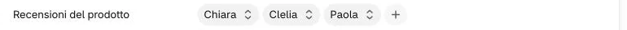
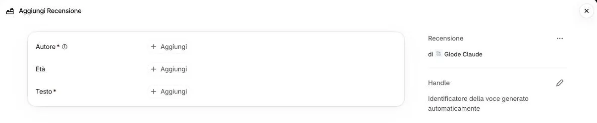
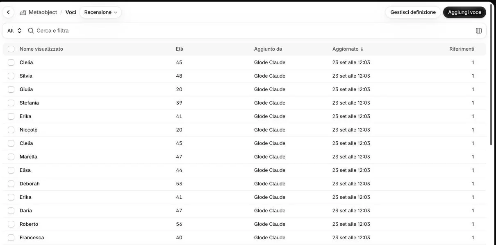
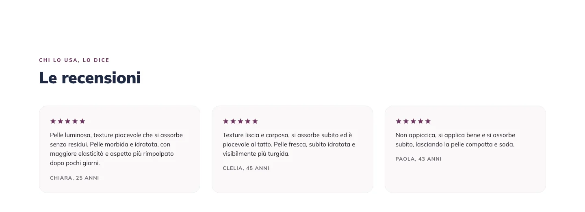

-
Aprite il prodotto e scendete fino a «Recensioni del prodotto». Cliccate il + dopo l’ultima recensione.

-
Nella finestra che si apre cliccate «Aggiungi voce», in fondo.
 Non qui
2
Non qui
2
Perché non scelgo un nome dall’elenco?
L’elenco mostra le recensioni di tutti i prodotti: sceglierne una la collegherebbe anche qui, e correggendola cambierebbe su tutti e due i prodotti.
-
Nella pagina «Aggiungi Recensione» cliccate «+ Aggiungi» accanto ad «Autore», «Età» e «Testo», scrivete, poi salvate.

3Come si scrivono?
Autore: il nome, per esempio «Barbara». Età: facoltativa, solo il numero (per esempio «52»): «anni» lo aggiunge il sito. Testo: la recensione così come è stata scritta.
Virgolette, apostrofi, accenti e a capo nel testo non rompono niente. «Handle», a destra, lo scrive Shopify: lasciatelo.
Non vedo il pulsante per salvare
Compare solo dopo che avete scritto qualcosa. La ✕ in alto a destra chiude senza salvare.
-
Tornati sul prodotto, controllate che la recensione nuova sia nel campo e cliccate «Salva».
E se va messa in un altro punto dell’elenco?
L’ordine del campo è l’ordine sul sito. Spostare una voce non l’abbiamo provato insieme in questa guida: se l’ordine deve cambiare, scriveteci quale prodotto e in che ordine.
-
Per togliere una recensione, cliccatela nel campo e scegliete «Cancella» in fondo al menu; poi «Salva».
 Non qui
Non qui
5
Non qui
Non qui
5
La recensione si perde?
No: «Cancella» in questo menu stacca dal prodotto solo quella recensione, che resta nel pannello e si può ricollegare.
Attenzione a due cose: un nome dell’elenco, cliccato, sostituisce la recensione che avete aperto; il ⊗ che compare a destra passando con il mouse sulla riga toglie tutte le recensioni del campo. Se succede: uscite senza salvare.
-
Per correggere il testo, aprite «Contenuto» → «Metaobject» → «Recensione», poi la voce.

6Ci sono più recensioni con lo stesso nome: quale apro?
In questo elenco il codice non c’è: distinguetele da età e testo. Il codice si vede nella finestra del + sul prodotto, sotto il nome (per esempio «glor13-3-clelia»: glor13 è il prodotto 1.3).
«Riferimenti» dice quanti prodotti usano la voce. Correggete e salvate: la correzione vale subito sul sito, senza toccare il prodotto.

Sul sito
Compare in fondo alla scheda del prodotto, nella banda «Le recensioni», nello stesso ordine che vedete in admin. Ogni prodotto ne mostra al massimo 50.
Ogni recensione ha cinque stelle fisse (non c’è una casella per il voto). Dal sito le clienti non possono scriverne: le inserite voi.